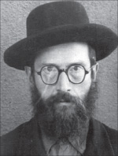

The Nkvd on the Trail of Rabbi Dworkin
About my uncle, Rabbi Zalman Shimon Dworkin, rav of Crown Heights for many years, and my aunt, Tzivia * Haritzka Nerovny, the Gentile to whom my grandfather sold the chametz * What the Russians did when they saw a Jew they were spying on, swallowing gold coins * Another chapter which deals with an e
 WEALTH FOR A WEEK
WEALTH FOR A WEEK
I can recall those flavor-filled moments on Erev Pesach when my mother had already put out the Pesach utensils on the Pesach’dike table, the glasses, the glass plates, and other Pesach utensils. We children would stand a long time around the table, enjoying watching the magical sight of Pesach utensils. My sisters’ eyes in particular sparkled when they saw the Cup of Eliyahu, as we called it. To us children, it was the most beautiful of our Pesach cups. It was made of glass and decorated with blue designs and said “L’chvod Chag Ha’Pesach” in blue letters.
I enjoyed the beauty of the cup. We had never seen a silver cup even in a dream. That innocent pleasure in the cup of those days would, in later years, arouse in me a feeling of brokenheartedness over those days of bitter poverty and hardship, but we found delight even in our poverty.
Many years later, I had the idea of explaining the statement of Chazal, “poverty befits Jews,” in the following way: Jews find the positive even in poverty.
The s’darim with the entire family around the table for Pesach, with the ke’aros of my grandfather and father, with the red wine spilled over into saucers on the white tablecloth, with the glass cups next to each family member, with my mother’s shining face and large doe eyes, with my father’s joy and festiveness that surged from his large, dark eyes, and with the wise face full of nachas of my grandfather. All this filled my heart with a happiness which cannot be described in words.
Joy also shone from the eyes of my two sisters. There was a special flavor to what my grandfather said when he related stories that pertained to Pesach and the Hagada, but even then, something happened that sabotaged my joy. The old fear ingrained in me (“yeshus” according to my father’s diagnosis) caused my heart to tremble at the beginning of the Seder. Why? Because I had to ask my father the “Four Questions.” In my childhood, my voice would break in fear and I nearly burst into tears. At that time, I absolutely could not understand why.
When our financial situation improved somewhat, we had large or small nuts at home to play with and also (mainly) for eating. Nuts were dear to us and when the situation at home was really “good,” we children got something new to wear for Pesach; dresses for my sisters and a shirt for me that my mother sewed. There were years that our relatives from Leningrad sent expensive gifts for Pesach. New shoes for us kids (how did they know our size?) and for our parents too.

There were times that we children “stole” the afikoman from my father or grandfather and we received a gift when we returned it. I remember the smile and sigh of my father when we reminded him of his promise after Pesach: Ach, I almost forgot. Yes, yes, children, G-d willing …
That is what he would say, more or less (I remember how one time we heard my father ask my grandfather with a smile whether the promise for the afikoman had the din of a neder. What my grandfather answered, I didn’t manage to catch, but he also smiled).
We had special Yomim Tovim when my Uncle Zalman Shimon and Aunt Tzivia, my father’s sister, came to us. My uncle was the rav in Staradov at the time (many years later he was the rav of Crown Heights). My father and uncle would sit late into the night talking pleasantly and I took pleasure in this, although hearing them was difficult and understanding what they were saying even more so.
In contrast to them, I understood what Aunt Tzivia said very well. And the stories she told. She spoke so nicely it was a delight to listen to her. They did not have children of their own and she bestowed her motherly feelings on us (I understood this later; we were her closest relatives). While the men sat at the table in the dining room, my mother and Aunt Tzivia huddled in the bedroom and my aunt captivated us with her stories. I will confess that I often joined those in the bedroom.
SUDDEN FLIGHT
I am going to go back a little and relate that at the end of the 30’s, Aunt Tzivia stayed with us for many weeks and months, not as a guest but as a refugee. What happened? The same thing that happened to many religious households and Chassidic homes in those days.
One morning, when my uncle went to daven in one of those secret minyanim, NKVD agents came to the house and asked my aunt where her husband was. Of course she said she did not know. As usual, they did not leave her so fast and they interrogated her and threatened her. She did not break but she was terrified lest my uncle enter the house. However, there was nothing she could do.
Hashem helped and a Jewish neighbor, a friend of my aunt, noticed that Red agents had entered the home of the rav. She knew that every morning he davened in a secret minyan (which she knew about and knew the location). It occurred to her that perhaps he was there at that moment and it would be very dangerous for him to return home only to fall into the coarse hands of the murderers. She immediately went to the minyan, and to her joy she met him and warned him that he should not consider returning home as the NKVD agents were waiting for him.
My uncle did not go home, of course. He hid out in the area of the minyan until night. In the dark of night he went to the train station, not the one in Staradov but to the next station, where he bought a ticket to a certain city and from there he went to Leningrad.
My Aunt Tzivia underwent the suffering of the interrogations and in her heart she thanked G-d that her husband had not fallen into their hands. They threatened to arrest her if she did not tell them where her husband was, but they did not follow through. My aunt actually did not know, for a long time, where my uncle was. It was only when he arrived in Leningrad that he told a relative to write (in code, of course) that he was in Leningrad. After a period of time, my aunt came to us in Krolevets until my uncle had settled in a bit in Leningrad.
My uncle and aunt were in Leningrad when the war broke out. They were there through the terrible siege, when masses of people perished from the great famine, the freezing cold, and all that goes along with those things. Most of our relatives who remained in Leningrad died during the siege. Uncle Zalman Shimon and Aunt Tzivia miraculously remained alive.
THE “UNBAKED” GOY
Back to Pesach. My Zeide-Rav’s selling of the chametz was a big help in parnasa, especially with the expenses of Pesach. Selling the chametz was a Jewish practice that the older Jews of the town and even those who were barely religious observed. When they sold their chametz, most of them left some rubles for the rav as is customary.
As was his wont, the selling of chametz was done in a meticulous manner. Everything was prepared properly. Even the goy to whom my grandfather sold the chametz was ready. Although he was a goy, he was one of those interesting types that was not quite “fully baked,” (when they said that someone was not “fully baked,” they meant he wasn’t altogether normal), who it would be worth writing about.
His name was Haritzka Nerovny. He had “golden hands” and not much in the way of brains. He did not manage to have regular work. He would hang around my grandfather who would occasionally give him some jobs to do in the house or by others. The main thing was my grandfather gave him something to eat every time he came to our house. Haritzka reeked of the cheap tobacco he smoked constantly “because I am always hungry,” he said, and my grandfather always gave him food whether he did any work for him or not.
His devotion to my grandfather went way beyond anything you find among humans; it was the loyalty of a dog. Aside from this, my grandfather paid him for every job he did for us. Every time my grandfather gave him some rubles he would smile with his open mouth from which only a few black teeth could be seen. Nearly every time he took money he would say: What? So much?
But when it came to selling the chametz, Haritzka was a member of the household, and not for naught. It was only Zeide’s patience that managed to get everything into his head.
THE QUESTION AFTER PESACH
In the best years of the 30’s, my mother and grandmother would ferment beets in a large earthenware jug in order to cook borscht for Pesach. In those good days, we would buy a goose before Pesach, or maybe even two, slaughter them and extract the fat that was then fried in a Pesach pan. Goose fat was the only fat we used throughout Pesach to cook everything.
Thanks to Pesach, we children enjoyed these “luxury” foods that we could only dream about the rest of the year. For the charoses on the ke’ara we ground nuts and added apples, pears and more. The charoses needed only a few nuts but if you were buying nuts already, you bought a sack of nuts so the children could have some too. We played with the nuts and then ate them.
However, after Pesach, I remember how my father would talk to Zeide and crease his brow. From where could he obtain a loan in order to repay the loan that he took out in order to buy things for Pesach? In Krolevets there were only a few Jews who managed to hide (mostly in the ground) gold coins that they had from before the communist revolution.
GOLD RUSH
As an aside, I will try to make you smile by sharing a story that is not exactly “clean,” which I heard from an old Krolovetsite Jew (who had dozens of buried gold coins):
After the revolution, the new Soviet rulers wanted to implement their “holy” goal and eradicate the “cursed bourgeois.” This meant, taking away all their money and sending them to the “polar bears,” i.e. Siberia.
They had many agents who were sent to “visit” all the homes where they suspected that there was hidden gold or silver. Like bloodhounds, they sniffed out where the gold and silver were hidden. They once went to a Jew that was under suspicion, who happened to have some gold coins in his pocket as well as some diamonds. When he saw the “guests,” he took the coins and diamonds and swallowed them.
It wasn’t easy and it took time and one of the agents saw what he was doing. They gave him something to drink that causes diarrhea and sat him down on a “pot” and waited. They had the time and the patience. After a while they asked him, “So, what’s happening? Did the Nikolayevs come out yet?” (That is what they called the gold coins with the image of Czar Nicholas on them).
The Jew said, “No, so far the only thing that’s coming out is Soviets.”
It was from those Jews who had hidden treasures that my father and grandfather received loans on occasion.
"The Nkvd on the Trail of Rabbi Dworkin." Beis Moshiach, no. 840 (July 6, 2012).